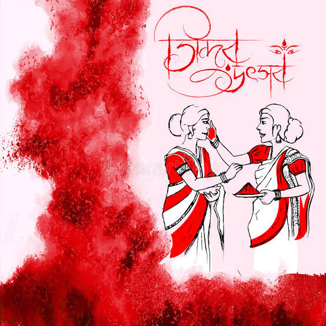

উপসংহার :
উৎসবের দুটি দিক; একটি ব্যাক্তির, আর অন্যটি হল সমষ্টির। দুর্গা পুজোয় মূলত আমাদের সার্বিকভাবে চোখে পড়ে সমষ্টির সমাবেশ। কিন্তু ব্যাক্তি মানুষ সাড়া না দিলে সমষ্টির উৎসব ম্লান হয়ে যায়। তাই ব্যক্তির গুরুত্ব এখানে সর্বাধিক। ব্যাক্তিগত জীবনে কেউ হিন্দু, কেউ মুসলিম, কেউ শিখ, কেউ বা ধর্মে বিশ্বাসী নয়; আবার কেউ ধনী, কেউ বা দরিদ্র- এই সকল প্রকার ভেদাভেদ দূরে সরিয়ে সবাই মিলেমিশে পরম আনন্দে আমরা এই উৎসবে মেতে উঠি।

প্রকৃতপক্ষে এই উৎসবের সঙ্গে ধর্মের যোগাযোগ বাহ্যিকভাবে দেখতে গেলে বড়ই ক্ষীণ। বরং এর সঙ্গে মিশে আছে নিখাদ আনন্দ এবং ভালোবাসার উদ্ভাস। তাই জাত-পাত, ধর্ম, বর্ন নির্বিশেষে সবাই এতে বাঁধা পড়ে প্রীতি ও ভালোবাসার বন্ধনে। আর এখানেই বাঙালির দুর্গাপূজার সার্থকতা।